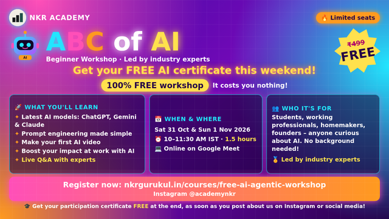

今日舉行
AI 入門 ABC 免費工作坊
ABC of AI – Free Beginner Workshop
完全新手向約 90 分鐘線上課：常見模型簡介、提示工程、現場做 AI 短片、職場應用路徑與 Q&A。出席並社交分享可領參與證書。
官方頁已核實今日（1 Nov）場次；會議連結會電郵／WhatsApp 發送。
官方連結 →
免費 AI 課程卷報 · 復古日刊
今日提要：核實收錄 15 項線上免費 AI 課程／工作坊，其中 5 項於今日舉行，其餘為今日仍可報名或即時開讀嘅自學課。免費＝無需付費即可參加或旁聽；證書或 API 用量或另計，已於卡片註明。公開網址：待 Oscar 提供正式 domain（本回合未部署）。

完全新手向約 90 分鐘線上課：常見模型簡介、提示工程、現場做 AI 短片、職場應用路徑與 Q&A。出席並社交分享可領參與證書。
官方頁已核實今日（1 Nov）場次；會議連結會電郵／WhatsApp 發送。
官方連結 →用免費入門工具由零組裝 Research Assistant Agent：現場 demo＋跟做；另有 LangChain 進階選項。需電腦、Google 帳戶。
官方 Meetup 標 Online；組別位於 Dallas，時區 CST。若 RSVP 已關可試 Google Form。
官方連結 →用 Gemini 做 agent：SQL 查機場營運資料＋政策文件檢索，回答延誤／成本／違規並檢查引用證據；會分享 notebook。示範數據為合成。
Gridzae／Meetup 標明 Free Online；連結僅出席者可見。
官方連結 →美運數據工程師帶領：Pandas／Plotly／Streamlit＋ChatGPT，把原始數據做成互動儀表板；面向學生與轉職者。
官方 Luma 頁標 FREE LIVE on Zoom。
官方連結 →兩位導師現場由空檔建 AI agent，介紹 Anthropic＋Microsoft 相關技能與職場路徑；FAQ 明確無需信用卡。
官方標 completely free；結尾或介紹付費長課程，研討會本身免費。
官方連結 →
赫爾辛基大學聯同 MinnaLearn 推出嘅免費 AI 素養課，無需複雜數學或編程；另有 Building AI 進階篇。
官方標明 series of free online courses。
官方連結 →
解釋生成式 AI 是什麼、點用、同傳統 ML 分別，並介紹 Google 工具；可賺技能徽章。
使用標註 FREE 嘅 course_templates/536FREE 頁。
官方連結 →
Google 實務 ML 入門：動畫、互動可視化與練習；涵蓋回歸、分類、神經網絡、LLM 簡介與公平性等。
公開網頁、無需付費即可閱讀與練習。
官方連結 →
用 Transformers、Datasets、Tokenizers、Accelerate 學 LLM／NLP；Colab 可跑程式。需良好 Python。
官方：「It’s completely free and without ads。」證書計劃尚未推出。
官方連結 →
由 Agent 基礎到 smolagents、LlamaIndex、LangGraph；可 audit 或做作業攞免費證書。需基礎 Python 與 LLM 概念。
官方：「This free course」「certification process is completely free」。
官方連結 →
涵蓋職場應用、Build with AI、領導採用、教學應用等軌道；通過評核可攞 badge（非正式認證）。
Help Center 明確：Academy courses are free。
官方連結 →
由第一次對話、提示、Projects／Artifacts／Skills，到 Connectors 與角色應用；Academy 整體標明免費。
FAQ：Claude Academy is free；部分進階功能試用或需付費方案。
官方連結 →
概念課＋實作課；建議有 Python／TypeScript 基礎。內容免費；呼叫雲端模型 API 可能產生費用，可用本地模型。
公開 GitHub 倉庫；API 用量另計。
官方連結 →
Jeremy Howard 主講，面向有編程經驗者；PyTorch／fastai／Hugging Face，可用免費雲端資源。配套書亦免費網上可讀。
官方標明 A free course。
官方連結 →
完全免費：AI 演進、醫療決策、影像辨識、語言模型、可信／公平／可解釋性。不限身分。
官方課程費用：免費；報名至 2026/12/31。
官方連結 →